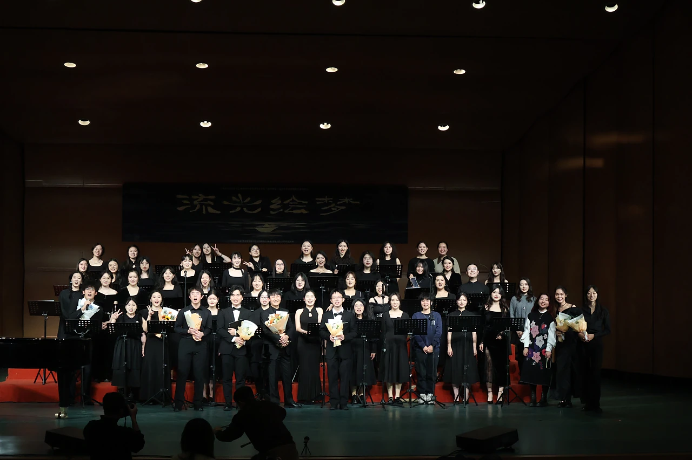
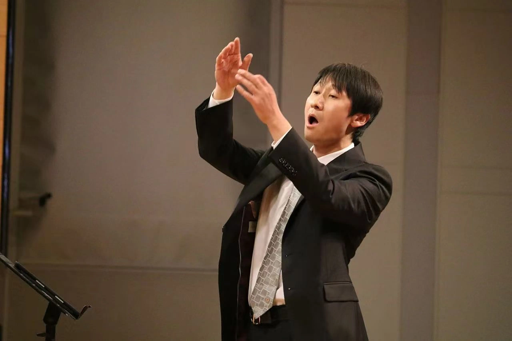

RUC 女子合唱团
中国人民大学合唱团女子团 · 成立于2020年

来自不同专业与年级，在同一片声场里找到彼此。
中国人民大学合唱团女子团成立于2020年，是中国人民大学艺术团合唱团分团之一。我们用歌唱展现人大学子的精神风貌，演绎中外经典合唱作品，曾多次在世界合唱比赛、全国大学生艺术展演活动、北京市大学生音乐节、中国国际合唱节等赛事中获奖，并曾受邀参加中国共产党成立100周年庆祝大会广场合唱、中华人民共和国成立70周年庆祝大会广场合唱、庆祝改革开放40周年“我们的四十年”文艺晚会等重要演出活动。女子团定期在校内举办专场音乐会，致力于普及高雅艺术，为校园文化建设和艺术素质教育贡献力量。

王程老师长期从事合唱教学与研究，带领团队在排练、演出与比赛中不断寻找更清晰的声音。